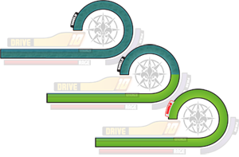
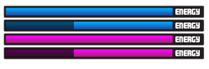
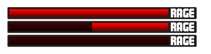

Despite that, Makuta retreated to his original strategy for the 12/13 movies, and lost to the SF's
traditional Union plan.
While Dr. Seinyor appears to be all-powerful, and he appears to be able to destroy Makuta
single-handedly, the truth is that the Super Family becomes stronger the more its numbers fall.
Once one member is "knocked out" (actually a coma that can only be ended by a Victory Aura or a
Bohrok Va's Redemption Spell), the rest of the team gains a "Pulse of Vengeance" buff that
increases their damage done by 1%, and increases their Pulse gauge. This "Pulse rating" can stack
as high as possible, limited by the number of fighters in the SF. Certain skills can only be used
by certain members at a set percentage, such as Hyper Supernova Beam. It can only be charged and
fired at very high Pulse rating, one that can only be achieved by Dr. Seinyor being the last
fighter in the lineup.

While the following was a quick overview of the SF's main strategy, now we'll move on to individual
combat. Each fighter has a gauge much like the one from Kingdom Hearts. As you can see, the
shield/health bar is the same, using an overlapping style that wraps around the fighter's portrait.
The shield gauge will deplete as the fighter takes hits, and it will constantly try to recharge,
doing so only while the fighter is not taking hits.If the shield is broken through, the fighter will have his/her health meter depleted. The health
meter cannot recover itself, except by a fighter with healing powers. The shield will overlap this
meter even while it has taken some hits.

The blue bar is the Energy Bar, a meter that ALL Super Family attacks take from. The bar will
attempt to recharge 3 seconds after the fighter casts something, much like an AC's power bar.
However, if the fighter is reckless and the bar is drained completely, it will lock itself and
force itself to recharge. During this time it cannot be used.
The rage bar measures the fighter's fury. It has only recently been able to be measured. Rage comes
natural to all sentient beings, and thus this bar is in action both in and out of combat, though it
is not used out of combat due to the

Super Family's values. The rage bar is added to everytime the
fighter experiences pain (or being attacked), frustration, stress, danger, inspiration, or if one
of his/her fellows is being attacked. As everyone knows, rage does not remain in a person like
energy or health, and thus it constantly depletes as long as it is not being added to by the
aforementioned. The Rage bar can be used as a backup energy bar, and in the minds of those who use
it, they can choose whether to attack from their Rage or Energy. Rage can even be transferred to
the Energy bar to shorten its recharge time or recover it quickly! Due to its nearly constant
availability, the Rage bar is a very enticing option for fighters, but it will cause the fighter to
become reckless, hindering their judgement and intelligence. Some members of the SF do not have
access to this bar due to their nature and lack of aggression.
The Pulse Bar is used to measure the "Pulse of Vengeance" aura, as is explained above in the intro.
The only fighters who have seen this bar fully charged are Takanuva and Dr. Seinyor.
The DRIVE Gauge is a new addition to the SF's Combat Interface, the oddly shaped yellow bar above
the Energy gauge. This bar is only active inside combat, and its exact uses are unknown. According
to Sunflash, the researcher behind the discovery of the Drive Gauge, it "has always been present,
and we are just now learning to understand its power and function", and "Drive is the vigor and
power built up as the thrill of combat enters the mind of the fighter". Apparently, the Drive Gauge
is completely empty out of combat, and it lazily fills up as the fighter... fights. Each hit the
opponent takes jumps the bar a small bit, and it appears to be synchronized with the Rage bar as
the fighter takes hits. Once the bar fills up, the number to the side, which starts at a red "0",
increases by 1 and the bar resets to empty. Once the fighter hits "10" Drive Rating, the bar will
lock and reach its maximum. As Sunflash's studies show, once the bar maxes out, the fighter's haste
increases, their stamina skyrockets, the shield gauge recharges with more zip, their Energy
depletes much slower and recharges with more urgency, and they generally fight with more liveliness
and hope. The strongest abilities in the SF all take a certain Drive Rating, the most common
subtraction being 3. The rarest and strongest completely drain the Drive Rating of the fighter and
others participating in the skill. A very common skill with the Drive Gauge is the ability to fight
with much more power, taking only 1 point and allowing the fighter to listen to "Fuel" by Metallica
while kicking some major baddy booty.
If the fighter falls in combat, "defeated" or "knocked out", his/her spirit adds to the Pulse of
Vengeance. Some skills have their power multiplied by the SoV stack (Hidden Eyes), while a few have
theirs exponentiated (Hyper Supernova Beam), meaning that Hidden Eyes' base damage (1.5 billion)
with 10 spirits released would become 15 billion (x10). If HSB was 100 damage and 10 spirits[S]
were released, the damage[D] would become [D]^[S], 100^10, or 100,000,000,000,000,000,000 (100
quintillion). The scary part is that HSB's power is still unknown and there are not only 10 people
in the Super Family...
Speaking of Hyper Supernova Beam, while is it the most powerful attack concieved as of yet, the
only downside to it is that it has a very long cast time that multiplies with each PoV charge
active. With no charges, although it is impossible to cast with none, HSB's cast time[T] is
approximately 10 seconds and its progress can be pushed back by taking damage. With 10
charges/spirits[S], while it would still be impossible, the cast time would be [T]x[S], 10x10, 100
seconds, or 1 min 40 seconds.